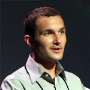
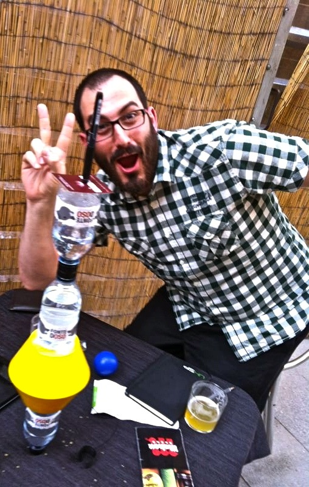
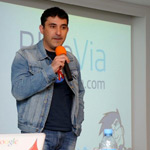

-

Jeremy Ashkenashttp://documentcloud.org @jashkenasCreator of CoffeeScript & Backbone.jsJeremy Ashkenas works on the Interactive News team at the New YorkTimes, and at DocumentCloud.org, helping news organizations analyze and publish the primary source documents behind the news. He created CoffeeScript, Backbone.js, Underscore.js, Docco and Jammit, among other open-source projects.Tomorrow's JavaScript, Today
JavaScript is both a beautiful and a frustrating programming language. If you could design your own version of JavaScript today, what would it look like? We'll talk about syntactic and semantic pain points, plans for future versions of JS, and how CoffeeScript serves as an attempt to expose the good parts of JavaScript in a simple way
-
Alex MacCawhttp://blog.alexmaccaw.com/ @maccmanRuby/JavaScript developer & entrepreneur. Creator of SpineJSRuby/JavaScript developer & entrepreneur. O’Reilly writer and open source developer.Programming for the Asynchronous Web
Alex MacCaw, author of Spine and O'Reilly's JavaScript Web Apps, talks about the problems with the web's traditional request & response model, and how to solve it using asynchronous programming and optimistic UIs to create vastly better user experiences.
-
Vicent Martihttps://github.com/tanoku @tanokuIntergalactic MC. Systems engineer at GitHub.Vicent Marti has a name which is difficult to pronounce. Despite his main occupation as intergalactic MC, he spends his spare time working full time at GitHub, where he builds tools for the people who build the Internet. There, he maintains The Library, wrecks occasional havoc on the backend and evangelizes what he believes is beautiful technology. As an European citizen (Spain, according to his passport), Vicent enjoys drums and yellow things and the sweet, sweet smell of civilization.Intergalactic Javascript Robots from Outer Spaceintermediate
GitHub, the largest source code host in the world, has over 70 employees spread all over the planet, and a rather unique workflow. Managing a distributed team of that size presented challenges that no other companies had faced before. That's why we did the only thing that made sense: we built a robot, in Javascript, running on Node, and we let it run our company. This is the story of Hubot, our intergalactic butler, who takes care of our whole application stack (including deploying code to production, which we do up to 20 times a day), manages our office, keeps track of all our employees and looks up pictures of pink ponies and cute dogs. All at the same time. We felt that Hubot was so awesome that every other company deserved having one, so we open-sourced it for everybody. If you're still not using Hubot, in this talk you'll learn how our robot from outer space can change the way your company works -- for the better.
-
Karolina Szczurhttp://dribbble.com/karolinaszczur @karolinaszczurDesigner and front end developer working at Nodejitsu.Designer and developer, open web enthusiast and web standards aficionado. If not working, she's probably busy coaching women in web technologies at Webmuses or organizing Javascript barcamps in her hometown - Kraków. Spreading web tech knowledge by being core contributor of Otwarta Sieć project aimed towards Polish developers.The pursuit of simplicitybeginner
Nowadays developers are flooded with various libraries which are supposed to help and speed up the development process but often proove to be counterproductive. Same with design processes - designers are trapped with styles and hypes which they use without thinking. This talk is more inspirational, and it's aim is to show good practices within processes, emphasize the importance of decisions made within them and how they impact whole projects. It will also compare some frameworks and libraries available and point out which one of them are useful in which use cases.
-
Jakob Mattssonhttp://jakobmattsson.tumblr.com/ @jakobmattssonA developer of business, people and software. Currently he is VP of Engineering at Burt.Jakob is head of engineering at Burt, the Swedish software startup helping publishers and advertisers become more clever and creative with data. It is challenging and complex things that get most of his attention. Professionally this has included leading a technology consultancy firm and starting a few companies in software development and recruitment. But he is a developer at heart, regardless the occupation. Although he is currently focusing on web development and the finer details of JavaScript the journey actually started off with C++ and game development. Lately he has also been sharing his thoughts on advances in programming languages, working in startups and getting things done in software development at a number of universities and conferences, including ScanDev, Nordic Ruby and JSConf. Jakob occasionally blogs at jakobmattsson.se and tweets at @jakobmattsson.Writing RESTful web services with node.jsbeginner
Tools like Express and NoSQL-databases have made it easy to write web applications using Node.js. But what if we don't need to serve HTML? What if we don't need to do templating, CSS and pretty animations? What if we only want to provide an HTTP-interface to our data? This talk will be about tips and tricks for building RESTful web services using Node.js. It'll discuss challenges, pitfalls and shortcuts. It will deal with authentication, declarative ways to describe your data structures and validation. If you're serious about building a backend able to serve any kind of application or provide a public API for your users, and doing it without pain, this is a talk for you.
-
Christian Kvalheimhttp://christiankvalheim.com/ @christkvEvangelist and developer. Author of the Node.js MongoDB driver. Currently working at 10gen.I wrote the MongoDB node.js driver and have been active in the community since the beginning. I currently work fulltime for 10gen on the node.js driver and other driver stuff.Mongoman a node.js powered pacman cloneintermediate
How to implement a multiplayer pacman clone called mongoman using node.js, websockets, html5 and mongodb. There will be a live gaming session (I'm bringing gear to host it)
-
Horia Dragomirhttp://hdragomir.com/ @hdragomirUI Developer, Hungry & Foolish. Currently working at Wooga.Horia Dragomir is a UI Developer, currently working at wooga in Berlin, where he focuses on developing HTML5 Mobile games. He has spent the better part of his working days in distributed teams, employing agile methods and discovering better ways for teams to work together.Fast mobile UIsintermediate
I will show you how to use the new features in HTML5 to create mobile games and the hoops you have to jump through to build a sleek and responsive user interface while trying to avoid most of the headaches that come with the job when you are always an edge case.
-

Guillermo Gutiérrezhttp://ggalmazor.com/ @ggalmazorProgrammer and software craftsman at BuntPlanet.During the last 10 years, I've been working in small companies mainly and I've had the privilege of participating in the construction of Fon, the largest wi-fi network in the world, currently with more than 2 million nodes. I organize events such as Katayunos and Merendojos in the Basque Country and Navarra. I am currently interested in bringing the good practices and methodologies from the server-side to the frontend, in building agile teams and other topics like continuous delivery or devops.Code refactoring dojoadvanced
First we will take some time to understand the GildedRose kata and point out a list of possible improvements. We will also try to sort the list depending on their priority for our goal. Then we will start working on them by covering the existing code with tests and applying the improvements iteratively, making the smallest possible change each time and checking that everything works on the way. We will finish the dojo by creating some unit tests (or specs) that will help us to detect and shape the core responsibilities of the components of the application.
You should come to the workshop with a laptop and these resources:
- A JavaScript editor or IDE of your choice
- Jasmine framework
- The source code of the kata. Get it here
- A web browser or other kind of Jasmine runner like jasmine-node (for node.js)
-
 Ramón Corominashttp://ramoncorominas.com/ @ramoncorominasNot-only-accessibility specialist: Pursuing happiness through -good- User eXperience. W3C's WCAG WG member.I work as accessibility consultant at @Technosite (Fundación ONCE) since 2008, involved in a wide range of projects (both national and international), covering a variety of topics such as accessibility audits and consultancy, delivering training or developing new evaluation methodologies. For example, I've given training and consultancy for the European Commission, EFSA, Vodafone, Cap Gemini, Iberdrola, UPC, etc. I'm also a member of the AENOR working group in charge of the development of the new UNE regulation about Web accessibility in Spain, and I've recently joined the W3C's WCAG WG.Using WAI-ARIA to create accessible web appsintermediate
Ramón Corominashttp://ramoncorominas.com/ @ramoncorominasNot-only-accessibility specialist: Pursuing happiness through -good- User eXperience. W3C's WCAG WG member.I work as accessibility consultant at @Technosite (Fundación ONCE) since 2008, involved in a wide range of projects (both national and international), covering a variety of topics such as accessibility audits and consultancy, delivering training or developing new evaluation methodologies. For example, I've given training and consultancy for the European Commission, EFSA, Vodafone, Cap Gemini, Iberdrola, UPC, etc. I'm also a member of the AENOR working group in charge of the development of the new UNE regulation about Web accessibility in Spain, and I've recently joined the W3C's WCAG WG.Using WAI-ARIA to create accessible web appsintermediateThe talk would consist of an overview of the possibilities offered by the WAI-ARIA spec to create Accessible Rich Internet Applications, explaining with brief examples how blind users can benefit from this technology. The speech would also highlight some issues regarding the varying accessibility support by current browsers and screen readers.
-
Daniel de la Mata Larahttp://danimataonrails.blogspot.com.es/ @danimataonrailsRails and Node.js developer.I am 37. I work mostly with Ruby on Rails and NodeJs. I love running, kickboxing and crossfit. The best projects I've done are called Hugo & Samuel. But they need daily maintennace.DIY - Create a node.js express APIintermediate
Do you have a MySQL BD and you want others to access your data? Do you believe a Restful(almost) API is the best way? Do you want to create it fast? NodeJs, Express & Sequelize may be what you are looking for. Give it a try!
You should come to the workshop with a laptop and these resources:
- A JavaScript editor or IDE of your choice
- Node.js
- Express.js
- express-resource
- Jade
- Sequelize
- MySql or SQLite
-
Nuria Ruizhttp://www.linkedin.com/pub/nuria-ruiz/1/590/126 @pantojacoderPrincipal Engineer at tuenti.comI have been working on the web for over ten years. Most of my web experience comes from the seven years I worked at Amazon.com. I learned a lot there since before taking that job I made my living doing research in Oceanography. I have experience with web development, operations, web services, localization and international launches of major products. I have worked in some of the bigest websites of the world but also devoted time to create web site frameworks that go big and small. On 2010 I joined tuenti.com, a social network in Spain with over thirteen million registered users. For most of my time at tuenti I have worked in PHP. I have recently changed my focus in tuenti from mobile to Javascript to deal with the client-side performance issues we were having.Client side rendering is not so easyintermediate
Our early attempts at doing client side rendering in tuenti.com brought us many performance problems, not only for the usual offenders (IE6 and IE7) but also for fast browsers like Chrome. We tried to solve most of those using a technology to render client side that ended up being faster on IE7 than Chrome, but still, things were not working. We had to scrape most of our homegrown framework and start from the beginning. We realized that the first thing we needed to do to use Javascript successfully in our thick client was to have a Javascript dependency management system. YUI came to our rescue. We also learned that in our case we would not be able to work only with client-side rendering, having server-side rendering was a must. That brings the problem of what template engine to use and whether to render server side with PHP or rather use Javascript and node so you can truly share templates between server and client. We will talk about the mistakes we made early on so you can learn from those, but also about technologies and methodologies that have (and have not) worked for us.
-
 Tomás Corralhttps://github.com/tcorral/ @amischolJavascript expert at Softonic. Interested in JS performance, node.js and game developmentMy beginnings as developer dates back to 1998, where I started working with HTML/Javascript and some early PHP frameworks. A few years later I was focused on Java development where I learned all I know about development using Object Orientation Paradigm and TDD and his importance to get good code. In those days I fell in love with Javascript and tried to get to know all about it. Last 8 years I am dedicated to developing entirely in Javascript the last two of them working on Softonic.com I consider myself self-taught and follower of the open source community with which I collaborate as much as I can. Co-Founder of WeLoveJS event which we are already preparing the third edition."Less is More" Tips to improve minimization of codebeginner
Tomás Corralhttps://github.com/tcorral/ @amischolJavascript expert at Softonic. Interested in JS performance, node.js and game developmentMy beginnings as developer dates back to 1998, where I started working with HTML/Javascript and some early PHP frameworks. A few years later I was focused on Java development where I learned all I know about development using Object Orientation Paradigm and TDD and his importance to get good code. In those days I fell in love with Javascript and tried to get to know all about it. Last 8 years I am dedicated to developing entirely in Javascript the last two of them working on Softonic.com I consider myself self-taught and follower of the open source community with which I collaborate as much as I can. Co-Founder of WeLoveJS event which we are already preparing the third edition."Less is More" Tips to improve minimization of codebeginnerAttendees will learn the importance of minimizing the code and how it can decrease bandwidth cost. Attendees will learn what are the improvements that can be done in their code to help YUI Compressor or Google Closure to make it more efficient. Attendees will learn how to integrate YUI Compressor in your daily development using a C.I (Continous Integration) server as Jenkins.
-
Jonathan Azoffhttp://www.azoffdesign.com/ @azoffA web developer and JavaScript hacker currently living in San Francisco, CA.I have been working as a professional engineer for over nine years, with focuses spanning from social games to real estate. I am also a programming hobbyist, with JavaScript and mobile web being my primary focuses. The thing that sets me apart from most JavaScript enthusiasts is that I base my contributions on need, as opposed to academic exploration. As a result my implementations tend to be less glamorous, but are more realistic representations of what you would see in real-world development. My most popular open-source contribution is Overscroll, a completely reverse-engineered iOS drift library. I have been maintaining it since 2009, and it has progressed through several major iterations.Building a maintainable and scalable jQuery Mobile app.intermediate
During my session, I will demonstrate the implementation of a practical jQuery mobile application. To emphasize my focus on practicality, the application will actually be the framework I run my presentation on. The session will be broken up into three parts: Establishing the Requirements, Developing the Core Framework, and Implementing the Slides application.
-
Keith Normanhttp://keithnorm.com/ @keithnormFront End Developer in Mountain View, CA. Cite "The Lorax" in arguments often, skateboard to work, optimistic skeptic..I'm a front end developer currently working for Groupon. I love JavaScript and everything related to HTML5. I also run a JavaScript meetup in the San Francisco Bay area called BayQuery http://www.meetup.com/bayQuery/The Pipedream of Sharing Code Between Node.js and the Browseradvanced
Building "fat client", API driven, client side applications is becoming the de facto way to build a web app. But what happens when you need to support server side rendering for SEO, or support clients without JavaScript and older browsers? I will show you how Groupon is tackling this problem by building an abstraction on top of Backbone.js, Node, and Express to allow complete and seamless code sharing between Node and the browser. The talk will include an in depth look at the obstacles of code sharing and how our framework, Pipedream, solves them. It will focus on showing real working code of how we are making the pipedream a reality.
-
Brian McKennahttp://roy.brianmckenna.org/ @puffnfreshTalk to me about programming languages. Working for Atlassian on Jira Studio. Working for myself on @roylangjs.Brian McKenna is a Java Developer at Atlassian, in Sydney. He has a special interest in languages and compilers. For the past year, he has been working on Roy, a statically-typed, functional "altJS" language. He has talked in the JSConf US 2012.Roy, a small functional language that compiles to JSbeginner
Roy is a statically-typed, functional programming language that compiles to JavaScript. It has features from languages such as ML and Haskell: type-inference, algebraic data-types, pattern matching, structural typing and do-notation. Its aim is to make writing JavaScript safer by improving reasoning.
-
Markus Leutwylerhttp://enyojs.com/ @twtomcatWorking at HP for European webOS Developer Relations.Working for European webOS Developer Relations, Markus is involved with webOS and the Enyo Framework daily. He loves working with other Developers and anything Web, Mobile and Technology related in general. He has a passion for communities, open-source, music and how technology affects our live.From Enyo to hero in one hourbeginner
Enyo is an open source object-oriented JavaScript framework emphasizing encapsulation and modularity. Enyo contains everything you need to create a fast, scalable and cross-platform mobile or web applications. Enyo powers webOS, and was designed from the beginning to be fast and work great on mobile devices. Enyo runs on almost everything, from phones to tablets to desktop browsers, and you can target Windows Desktop, Chrome App Store and various mobile operating systems. You are developing with Enyo in your well known environment, the Browser and its powerful Developer Tools.
You should come to the workshop with a laptop and these resources:
- A JavaScript editor or IDE of your choice
- A modern browser
- The latest copy of Enyo
- (Optional) The SDK of your mobile platform of choice (be it webOS,iOS,Android,Blackberry,WP7)
-

Andrés L. Martínezhttp://www.linkedin.com/in/aleonar @davilagrauBlueVia Developer Program Engineer.Master degree in Computer Science by the Polytechnic University of Madrid. Currently he is a BlueVia Developer Program Engineer in O2 Uk, in Global New Services Unit (prev. Innovation Unit) of Telefonica Corp., spec. Applications and Global Internet Companies. Since 2007 till September 2010 he was an OSS specialist in Telefónica R&D. During the period from 1998 till 2002 he was an engineer of R&D department of Teldat , a network infrastructure maker and from 2002 till 2007 he was an active member of the research group GyC/Libresoft of the Rey Juan Carlos University, where he was a teacher. He started with OSS when he was a R&D engineer in Teldat, where he ported the Linux kernel to M860 architecture. Currently he is member of the Morfeo Project organization, where he is involved in the community management but also in initiatives such as an OSS marketplace or the definition of learning and certification framework of OSS technologies. He is involved in Vulcano and QualiPSo which has similar goals: promote the adoption of OSS in the industry. As results of this participation, he is defining and setting up de Morfeo Competence Centre , that is within of QualiPSo Competence Centres Network, and management the development of a new generation of collaborative tools. He also is part of INES OSS and NESSI OSS working groups and the IEEE Computer Society and ACM.Guillermo Lópezhttp://www.pijusmagnificus.com @willyarandaMember of Mozilla Hispano and OpenWebDevice developer.I'm a passionate of the web, and I've been involved with Mozilla for 7 years, since I was 17 years old. I love web technologies and that's why I'm working for Telefónica I+D making an awesome cheap smartphone based on pure web technologies.OpenWebDevice: complete HTML5 mobile & HTML5 APIs for BlueViaadvanced
BlueVia is the global developer platform from Telefonica. Our main interest is to talk to developers all across Latin America and Europe (and many countries in Asia around some events) to show them how we can help to monetize their applications and to empower their resources. What we would like to show you is how to work with HTML5 APIs and with OpenWebDevice. Don’t hesitate: join our workshop and explore our APIs! :)
You should come to the workshop with a laptop. Prerrequisites are:
- A JavaScript editor or IDE of your choice
- Some knowledge of REST
- Some knowledge of oAuth
-
Javier Arévalohttp://www.iguanademos.com/Jare/ @TheJareDemoscener, game developer for 25 years, movie and photography aficionadoJavier Arevalo begun developing commercial videogames in 1986 with "Stardust", published by Topo Soft. In 1995 he developed "Speed Haste", one of the first spanish 3D videogames with worldwide publishing. He has worked for the last 17 years on Producer and Technical Director roles at High Voltage Software in Chicago, Radical Entertainment in Vancouver, and Pyro Studios in Madrid. His experience ranges from AAA PC and console games such as the Commandos series, Praetorians or [Prototype], to social games such as Sports City for multiple social networksAn Overview of Javascript in Games Developmentbeginner
The aim of this talk is to explore the different technologies, platforms and challenges involved in using Javascript to develop and publish videogames. The target audience are Javascript developers interested in games development, and game developers interested in the possibilities of Javascript. The content of the talk is technical but aimed at an entry- and mid-level audience.